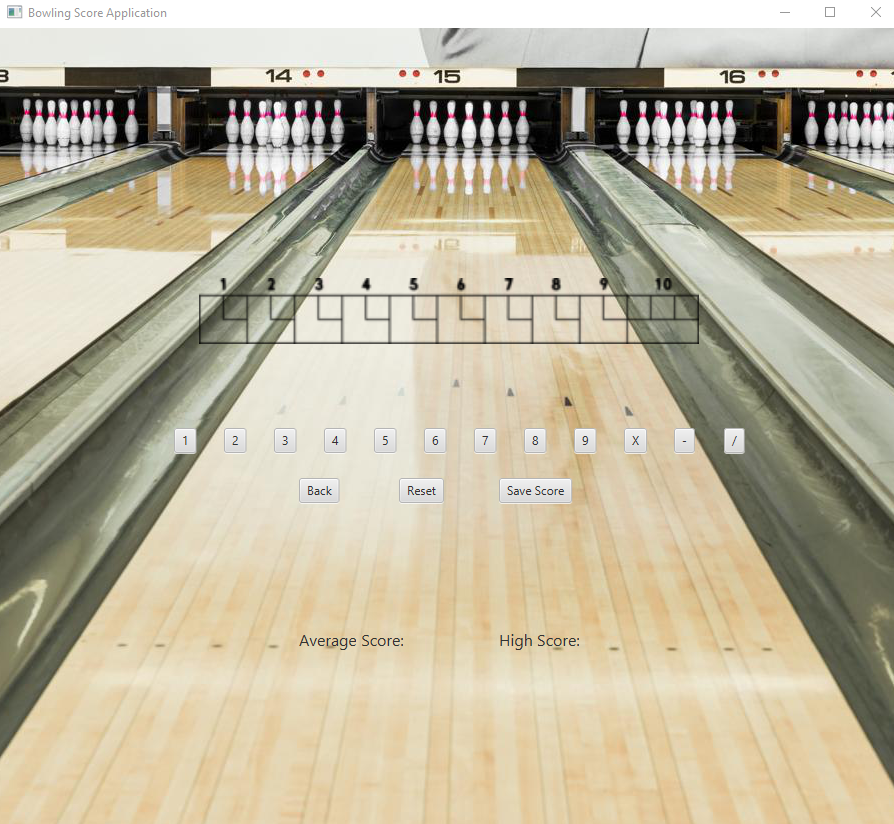

For my final project, I coded a bowling score application. This application takes inputs from the user on a shot by shot basis using buttons located on the GUI. At the end of the game, when all the frames are filled in, the total score will be calculated based on the World Bowling rules and displayed on the GUI. Additional features include the ability to save your games, which will be stored in a .TXT file, so that the program will be able to access the data whenever the application is run at a different time. The user’s data is then used to calculate and display the user’s average score, their highest game, as well as how many pins over or above their average score they scored in their last game bowled. All of this information is displayed at the bottom of the GUI. The application allows multiple games to be scored and saved without restarting the program.
The program is relatively straightforward. When the program is first run, the user will see an empty bowling score sheet. They will also see a series of numerical buttons ranging from 1-9, as well as additional buttons labeled “X”, “-”, and “/”. These buttons represent strike (10), open (0), and spare (10-first ball). When a ball is thrown in real life, start by hitting the button that corresponds to how many pins were knocked down on the throw. Continue to keep logging each throw until all the frames have been completed. If a mistake is made, the user can press the “Back” button one time and then press the intended button and the number on the GUI will be replaced with the new input. The user will know when the game is completed, because a score will pop up at the end of the score sheet when all the frames have been completed. The user then has the option to save their score. This allows the user to keep track of their stats. Once the save score button is clicked the stats “Average Score:”, “High Score:”, and “You were x amounts of pins your average” will appear at the bottom of the GUI. Then, if the user wants to input another game, the reset button can be hit and a blank slate will appear. The process is then completed.
